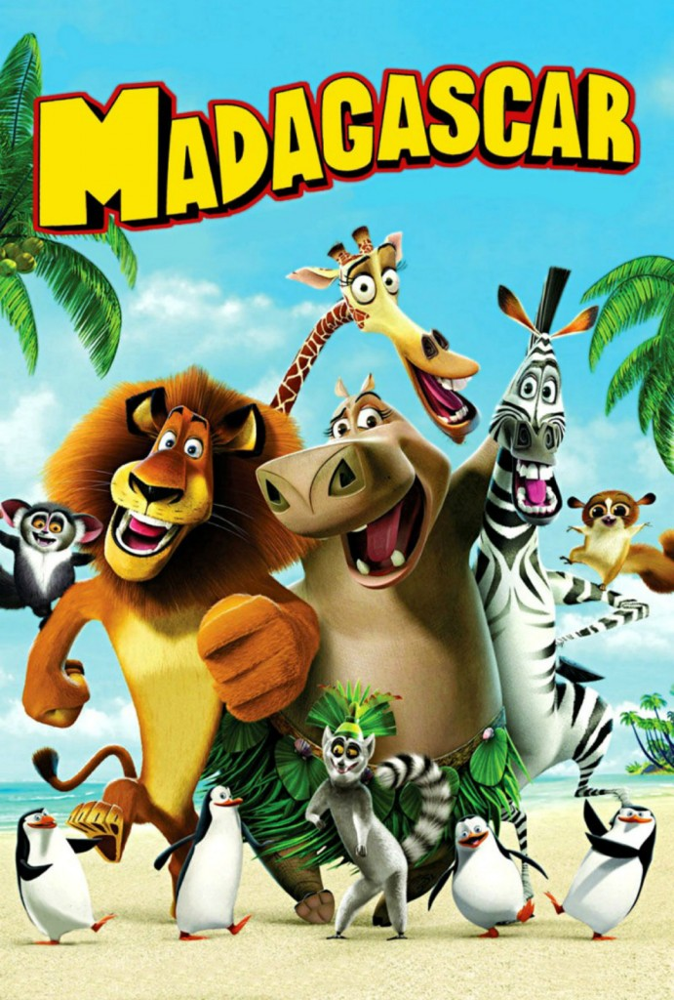

Thomas A. Edison High School
10th Grade
Project #1
Alena Persaud
Movie #1 -
Tangled
Tangled was one of my many favorite movies as a child. I loved watching Disney movies, and Tangled was one of my favorite. I watched it all the time when I was younger, sometimes with my family. The movie is about a princess, Rapunzel, who had long blonde hair with magical powers. When she was a baby, she had gotten kidnapped by a witch and was locked up in a tower where no one would find her. But by her 18th birthday, she finally escapes and reunites with her real family.
Movie #2 -
Frozen
Frozen was another one of my favorite movies when I was younger. I remember when it was really popular when I was in elementary school and talking about it with my friends. This movie is about two sisters. The sister with magical ice powers, Elsa, accidentally causes an eternal winter out of fear and her sister Anna is determined to find her and put an end to the frozen world that Elsa had created.
Movie #3 -
Madagascar
Madagascar was also one of my favorite movies when I was younger, I had all of the movies and watched them many times as a child. The first movie is about four zoo animals who had escaped and ended up on a ship to Madagascar. This resulted in them being stranded on an island and having to adjust to life in the wild. But, here they meet other animals and have new experiences, and it starts to not seem as bad living in the wild as they thought.